Nova revisão: cenários, materiais e animações — ver a revisão atual.
Super Feka Gaps World · revisão de 8 de outubro
Uma ilha com mais vida.
Fundos e cenários redesenhados nas 14 fases do Império da Delícia. A arquitetura, a vegetação e os materiais agora distinguem cada região, com profundidade e detalhes na mesma grade de pixels do jogo.
7 ambientes14 fases50 enquadramentos320 × 180 pixels nativos
Antes e depois, no mesmo ponto.
Cais do Primeiro Gole · O cais de copos vazios
Antes desta revisão
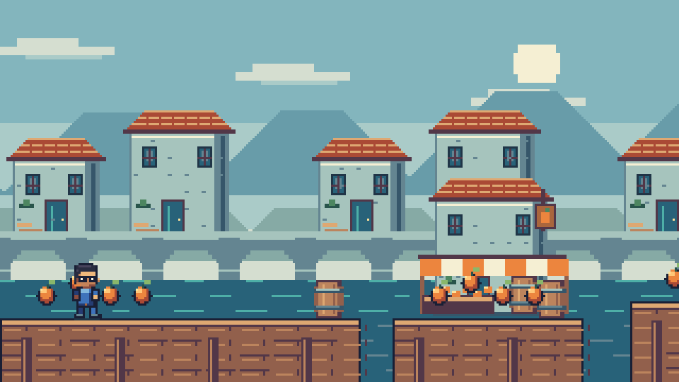
Base já integrada ao World, com cenários simples e repetitivos.
Depois
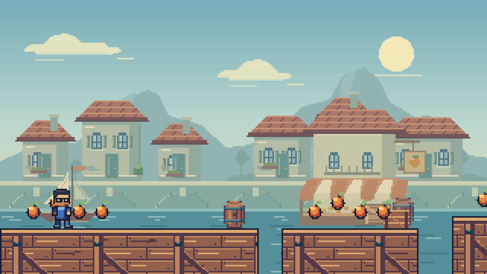
Arte nativa, materiais próprios e camadas de profundidade.
As capturas usam o renderizador real, com a mesma câmera e posições preparadas para revisão visual. Não representam partidas completas. Clique nas imagens para ver o arquivo em tamanho integral.
Cada região conta uma parte da história.
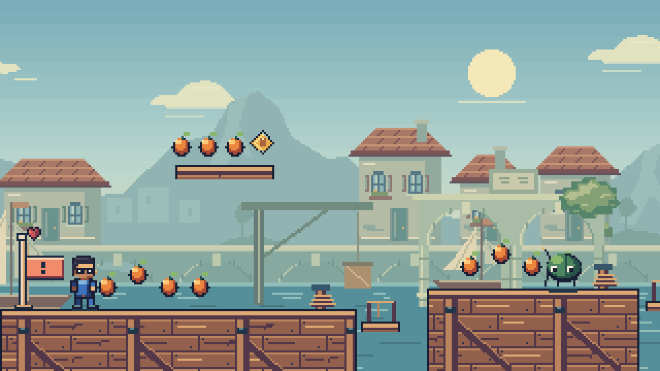
Cais. Barcos à vela, guindaste de carga, telhados, sacadas, mercado e píeres de madeira.
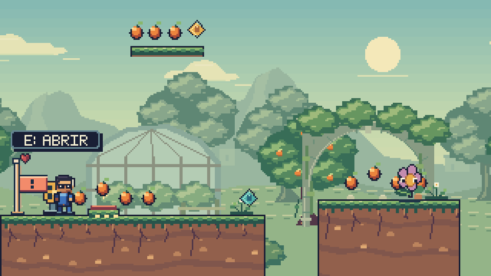
Pomares. Copas sobrepostas, terraços de cultivo, moinhos, estufa, pérgolas e solo com raízes.
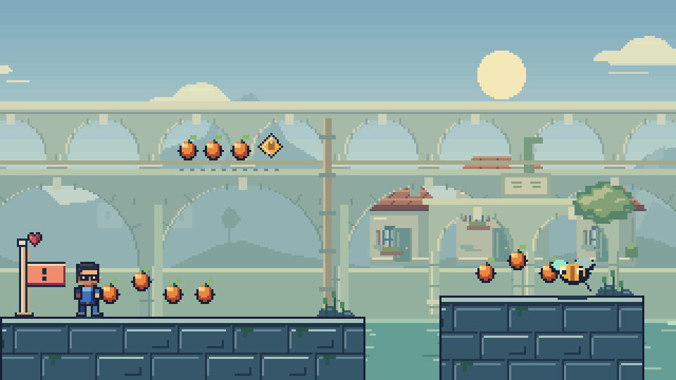
Aqueduto. Arcos em dois níveis, pedra talhada, tubulações e canais entre bairros.
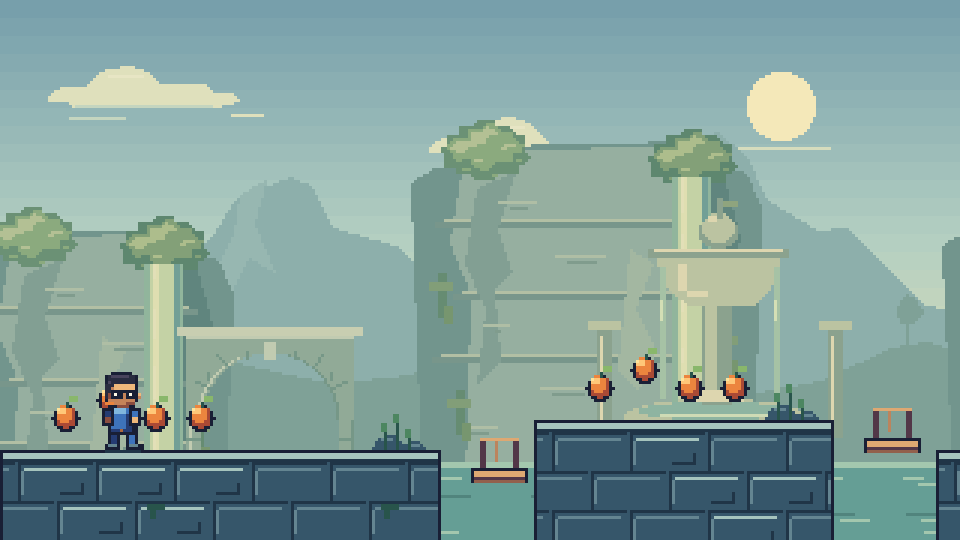
Reservatório. Paredões, quedas d'água, vegetação e fontes; a nascente de Jajá tem seu próprio santuário.
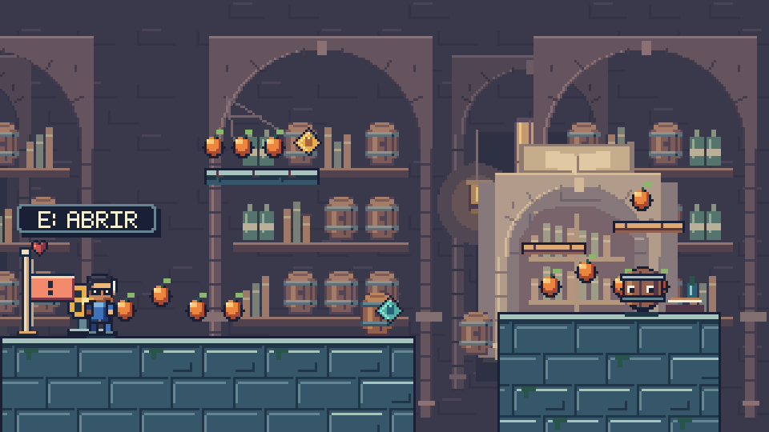
Arquivo. Abóbadas, livros, garrafas, barris e lamparinas, com prateleiras variadas.
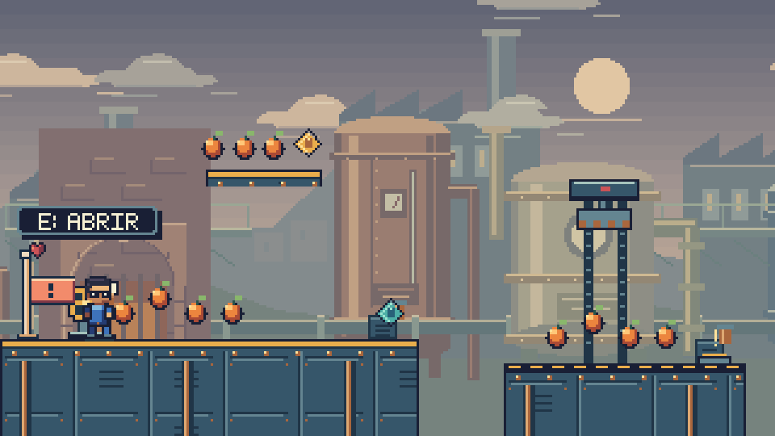
Refinaria. Tanques de cobre, soldas, medidores, chaminés, fornalhas e passarelas.
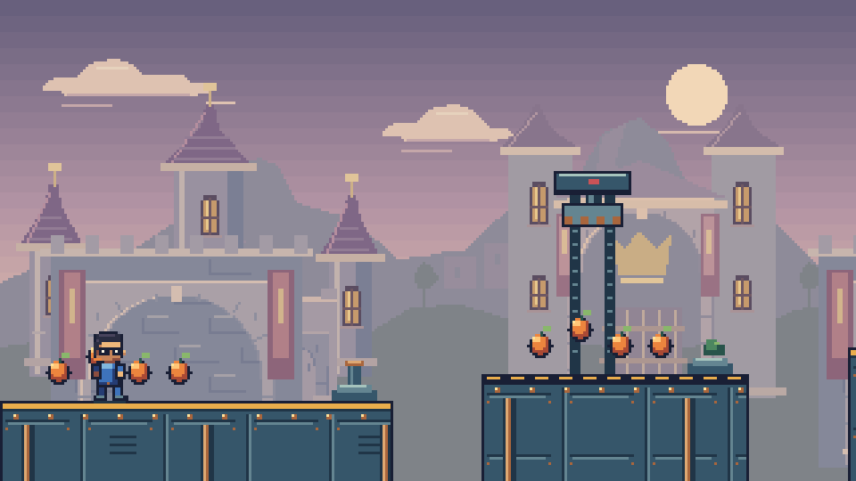
Cidadela. Torres, portões, estandartes e detalhes de pedra e latão sob o céu do fim da tarde.
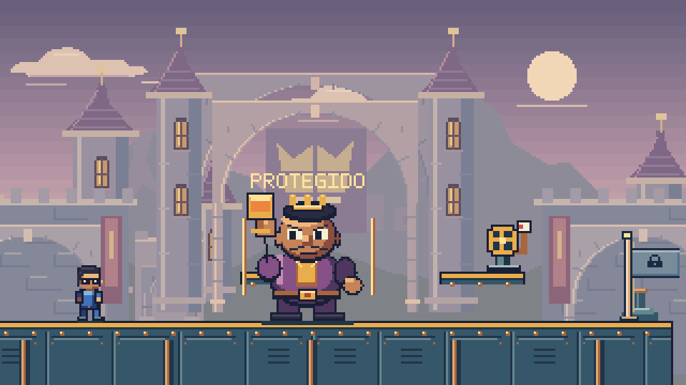
Salão do barão. Vitral da coroa e arquitetura própria para o confronto final.
Dentro do jogo.
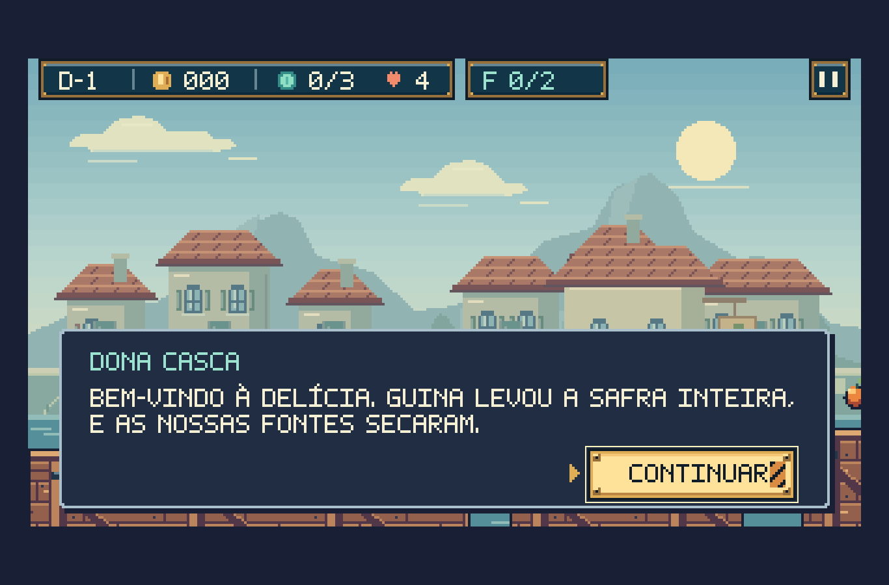
Diálogos e HUD compartilhados com o World.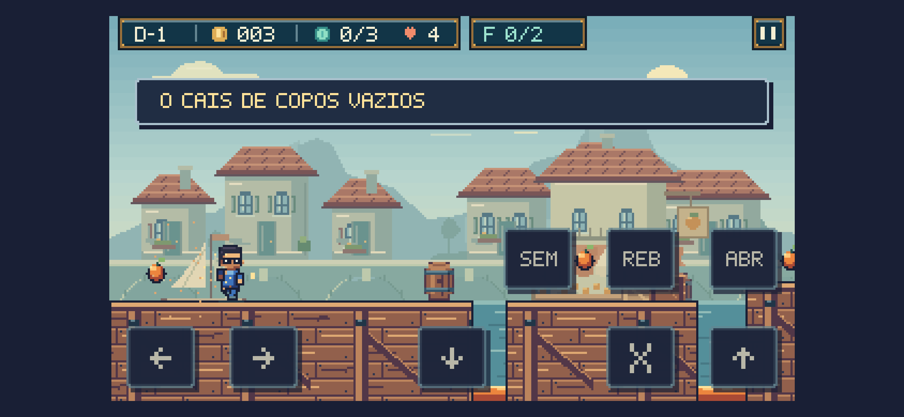
Revisão também em tela pequena, com controles de toque.Foram feitas duas passadas de acabamento e uma revisão final de cor, composição e rolagem. O fundo tem contraste mais baixo para preservar a leitura de Feka, dos inimigos e das bordas das plataformas.
Build aprovado; 136 testes passaram, com 1 teste opcional ignorado. A revisão de apresentação produziu 60 capturas em cinco tamanhos de tela, sem erros no navegador. A inspeção de rolagem verificou 700 quadros nas 14 fases.